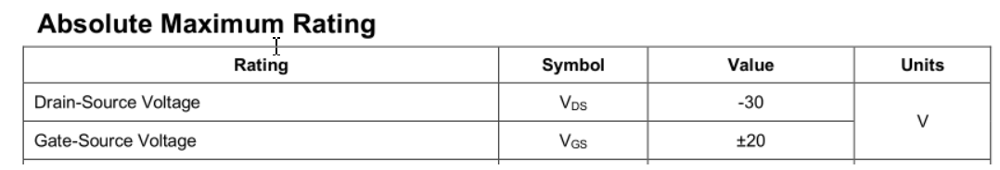
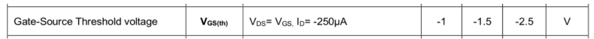
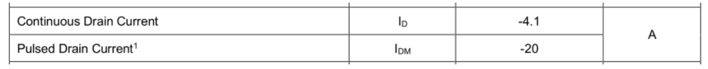
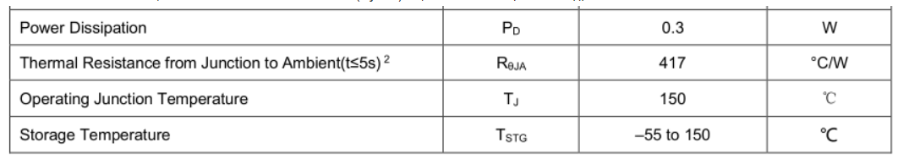

分享技术, 分享精彩
学过的东西, 要记得做个记录
晶体管
二极管

系统性学习: 如何从0到1了解二极管
稳压管工作原理
齐纳二极管又叫稳压二极管
稳压二极管的伏安特性, 如图.
正向偏置状态下, 稳压二极管表现为普通二极管的伏安特性, 即正向特性为指数曲线. 当反向电压增大到一定数值时则击穿, 击穿区的曲线很陡, 几乎平行于纵轴, 表现为很好的稳压特性

整流管工作原理
原理:
二极管整流利用了它具有单向导电性, 也就是电流只能从正极流向负极, 而不能从负极流向正极. 只有二极管两端加正向电压并且大于一定值时, 二极管才会导通, 导通后电阻很小, 相当于一根导线. 而在二极管两端加反向电压时, 二极管因为内部PN结的关系, 反向电流很小, 可以忽略不计, 可以看作是截止状态.
半波整流电路
参考: 二极管整流电路工作原理图解
半波整流电路:

半波整流电路波形:

220V/50Hz交流电经过变压器输出U2, U2也是正弦交流电压, 大小和方向不断变化. 当正半周流过二极管时, A点电位处于高电平, B点电位处于低电平, 二极管处于正向偏置, 此时二极管导通, 当负半周流向二极管时, A点电位低于B点电位, 二极管反偏, 处于截至状态, 没有电流流过. 产生的波形只在一个方向上变化, 称这种为脉动直流电
桥式整流电路
参考: 秒懂桥式整流工作原理(动画)
变压器u2正半周时电流通路:

变压器u2负半周时电流通路:

整个周期电流通路是这样的:

桥式整流电路输出波形与全波整流电路的一样, 也是全波波形, 所以整流后输出电压是整流前的0.9倍

总结:
（1）画图时要注意4只整流二极管连接方法. （2）电源变压器次级线圈不需要抽头. （3）每一个半周交流输入电压期间, 有2只整流二极管同时串联导通, 另外2只整流二极管截止. （4）桥式整流电路输出波形是全波波形
三极管
参考: 三极管的动画
用几个动画简单的解释下: 为什么小电流Ib能控制大电流Ic的大小, 以及放大电路的原理
这里的三极管是双极型晶体管, 模电的放大电路和数电的简单逻辑电路里面都会用到. 有集电极c、基极b、发射极e、以及两个PN结：集电结和发射结. 集电极面积比较大, 基极厚度薄而且载流子浓度比较低.
下图是个NPN型的三极管:

当发射结正偏时, 电荷分布会发生变化, 发射结宽度会变窄;相当于给电子打开了一扇e到b的大门
集电结反偏时, 电荷分布会也发生变化, 集电结宽度会变宽. 相当于打开了阻碍电子从c级跑出去的大门, 如下方动画所示:

b级会接一个大电阻RB限制电流Ib的大小, 跑到b极的那些多余的电子就只好穿越集电结, 形成电流Ic, 如下方动画所示：

如果基极电压翻倍, 电荷分布会继续发生变化, 发射结宽度会变得更窄, 这扇大门变得更宽了, 将会有更多的电子跑到b级. 如下方动画所示:

由于RB是大电阻, Ib就算翻倍了也还是很小, 所以更多的电子会穿越集电结, 让Ic也翻倍. 如下方动画所示:

两个直流电源是可以合并到一起的, 再加上小信号ui和两个电容, 就得到了放大电路, 如下图所示:

如果电阻大小合适, 这个放大电路能够将小信号ui放大成相位相反的大信号uCE, 如下方动画所示:
 红色为输入端, ui的变化会影响UBE, 把发射结看成一个小电阻, 红色的Q点就会沿黑线运动, 然后画出iB的图像;
根据iC=βiB,画出iC的图像, 纵坐标从μA变成了mA;
而输出端有UCE=UCC-ICRC, 当UCC、RC不变时, UCE与IC反相
红色为输入端, ui的变化会影响UBE, 把发射结看成一个小电阻, 红色的Q点就会沿黑线运动, 然后画出iB的图像;
根据iC=βiB,画出iC的图像, 纵坐标从μA变成了mA;
而输出端有UCE=UCC-ICRC, 当UCC、RC不变时, UCE与IC反相
动画的不足之处:
- 水箱的比喻容易让人产生一种误解, 认为IC最大, 其实IE才是最大的电流
- 动画里完全忽略了电子的热运动速度, 那个速度远大于电压作用下电子的漂移速度
- 动画里并没有体现出能级、能带、费米分布等内容
MOS管
参考: MOS管原理,非常详细
参考: 超低内阻mos管-MOS总结
三个极怎么判定

是N沟道还是P沟道


寄生二极管的方向如何判定


MOS管用作开关时在电路中的连接方法


应用


使用场景
一般主板上使用最多的是增强型MOS管
NMOS最多, 一般多用在信号控制上
其次是PMOS, 多用在电源开关等方面
耗尽型几乎不用
与三极管的区别
三极管是电流控制, MOS管是电压控制, 主要有如下的区别:
-
只容许从信号源取少量电流的情况下, 选用MOS管；在信号电压较低, 有容许从信号源取较多电流的条件下, 选用三极管.
-
MOS管是单极性器件(靠一种多数载流子导电), 三极管是双极性器件(既有多数载流子, 也要少数载流子导电).
-
有些MOS管的源极和漏极可以互换运用, 栅极也可正可负, 灵活性比三极管好.
-
MOS管应用普遍, 可以在很小电流和很低电压下工作.
-
MOS管输入阻抗大, 低噪声, MOS管较贵, 三极管的损耗大.
-
MOS管常用来作为电源开关, 以及大电流开关电路、高频高速电路中, 三极管常用来数字电路开关控制.
G和S极串联电阻的作用
MOS管的输入阻抗很大, 容易受到外界信号的干扰, 只要少量的静电, 就能使G-S极间等效电容两端产生很高的电压, 如果不及时把静电释放掉, 两端的高压容易使MOS管产生误动作, 甚至有可能击穿G-S极, 起到一个固定电平的作用.
G极串联电阻的作用
MOS管是压控型, 有的情况下, 为什么还需要在G极串联一个电阻呢？
1, 减缓Rds从无穷大到Rds(on). 2, 防止震荡, 一般单片机的I/O输出口都会带点杂散电感, 在电压突变的情况下, 可能与栅极电容形成LC震荡, 串联电阻可以增大阻尼减小震荡效果. 3, 减小栅极充电峰值电流
MOS管的米勒效应
关于MOS管的米勒效应, 可以阅读文章: 臭名昭著的MOS管米勒效应
选型要点
- 电压值
关注Vds最大导通电压和Vgs最大耐压, 实际使用中, 不能超过这个值, 否则MOS管会损坏.

关注导通电压Vgs(th), 一般MOS管都是用单片机进行控制, 根据单片机GPIO的电平来选择合适导通阈值的MOS管, 并且尽量留有一定的余量, 以确保MOS可以正常开关

- 电流值
关注ID电流, 这个值代表了PMOS管的能流过多大电流, 反应带负载的能力, 超过这个值, MOS管也会损坏

- 功率损耗
功率损耗需要关注以下几个参数, 包括热阻、温度. 热阻指的是当有热量在物体上传输时, 在物体两端温度差与热源的功率之间的比值, 单位是℃/W或者是K/W, 热阻的公式为ThetaJA = (Tj-Ta)/P, 和功率和环境温度都有关系

- 导通内阻
导通内阻关注PMOS的Rds(on)参数, 导通内阻越小, PMOS管的损耗越小, 一般PMOS管的导通内阻都是在mΩ级别
- 开关时间
MOS作为开关器件, 就会有开关时间概念, 在高速电路中, 尽可能选择输入、输出电容Ciss&Coss小、开关时间Ton&Toff短的MOS管, 以保证数据通信正常
参数解释推荐阅读文章: 带你读懂MOS管参数「热阻、输入输出电容及开关时间」
- 封装
根据PCB板的尺寸, 选择合适的PMOS管尺寸, 在板载面积有限的情况下, 尽可能选择小封装；尽量选择常见封装, 以备后续选择合适的替代料
usb,电源,电池-供电电路
C语言
编译过程
预处理: 展开头文件及宏定义
gcc -E -I./inc test.c -o test.i
cpp test.c -I./inc -o test.i
编译: 将预处理的代码翻译成汇编代码
gcc -S -I./inc test.c -o test.s
汇编: 将汇编代码翻译成机器码, 这一步生成二进制格式的目标文件
as test.s -o test.o
链接: 将目标文件和库文件链接成最后的可执行程序
ld -o test.out test.o inc/mymath.o ...libraries...
内存布局
栈区
局部变量, 编译器在编译时已经确定了栈的大小
堆区
malloc分配的内存, 程序员自己控制 分配与释放
数据区
全局区(静态区)
如果已初始化, 放在DATA段
如果未初始化, 放在BSS段, 这里只保存必要的大小信息, 不占用可执行程序的大小, 加载程序时分配内存
常量区
常量字面量
代码区
函数定义
大小端 位域
大小端:
intel芯片用的是小端, 就是内存是递增的, 数据是按照字节存放的, 低位数据放在低地址上, 不符合人类的阅读顺序, 比如: 对int类型数据 它的数据是: b3 b2 b1 b0, 内存从低到高: b0 b1 b2 b3
结构体对齐
-
第一个成员的偏移量为0
-
其它成员的偏移量是其对齐数的整数倍
-
结构体的大小为最大对齐数的整数倍
例子： struct One { char a; double b; short c; int d; char e; }; 规则1： a的偏移量是0 规则2： 由于b的对齐数是8,所以1个字节补7个字节，b的偏移量为 0 + 1 + 7 = 8 由于c的对齐数是2,c前面的长度是 8 + 8 = 16, 是2的倍数， 所以c的偏移量是 16 由于d的对齐数是4,d前面的长度是 16 + 2 = 18, 不是4的倍数， 补2个字节， d的偏移量是 18 + 2 = 20 由于e的对齐数是1,e前面的长度是 20 + 4 = 24, 是1的倍数, d的偏移量就是 24 整体的大小为 24 + 1 = 25 规则3： 由于25不是最大对齐数的整数倍, 所以补7个字节, 为32
另外:
如果使用了 #pragma pack(4) 这个宏可以改变最大对齐数, 这意味着比如double的对齐数就是4. 也可以使用: __attribute__((__aligned__(4))) #pragma pack(4) struct One { char a; double b; short c; int d; char e; }; 规则1： a的偏移量是0 规则2： 由于b的对齐数是4,所以1个字节补3个字节，b的偏移量为 0 + 1 + 3 = 4 由于c的对齐数是2,c前面的长度是 4 + 8 = 12, 是2的倍数， 所以c的偏移量是 12 由于d的对齐数是4,d前面的长度是 12 + 2 = 14, 不是4的倍数， 补2个字节， d的偏移量是 14 + 2 = 16 由于e的对齐数是1,e前面的长度是 16 + 4 = 20, 是1的倍数, d的偏移量就是 20 整体的大小为 20 + 1 = 21 规则3： 由于21不是最大对齐数的整数倍, 所以补3个字节, 为24
gcc中常用属性
用于设置编译器的一些特殊行为
设置对齐字节数:
__attribute__((__aligned__(4)))
取消优化对齐, 按照实际字节数存储
__attribute__((packed))
将函数或数据放到特定的代码段:
__attribute__((section("section-name")))
阻止函数内联:
__attribute__((noinline))
让函数总是内联:
__attribute__((__always_inline__))
设置特定函数的优化级别， O0,O1,O2,O3:
__attribute__((optmize("Ox")))
gcc 优化
优化级别
O0,O1,O2,O3,Os
优化方法
通过给gcc参数:
gcc -O2 ...
通过代码:
给这行代码以下的代码设置优化级别:
#pragma GCC optimize ("O3")
给特定函数设置属性:
__attribute__((optmize("O3")))
main函数之前发生的事
大概是:
- 设置栈帧
- 设置bss区域数据为0
- 如果需要, 执行 hardware/software init
- 配置参数
- 调用main
- 执行exit.
Rust 笔记
Rust 的 安装与卸载
参考链接:
https://www.rust-lang.org/zh-CN/tools/install
安装:
curl --proto '=https' --tlsv1.2 https://sh.rustup.rs -sSf | sh
版本号:
rustc --version
升级:
rustup update stable
rustup update
设置默认 版本:
rustup default stable
rustup default nightly
工具链
rustup toolchain install nightly
rustup toolchain install nightly-2020-11-19
rustup toolchain list
rustup default nightly-2020-11-19
ps:
"2020-11-19" 这个时间是在 rust 的 git 中的tag上找的
rustup override set nightly
## riscv
rustup target add riscv32imac-unknown-none-elf
卸载:
rustup self uninstall
cargo 命令
添加工具:
cargo install cargo-generate
cargo install cargo-edit
cargo install mdbook
创建项目:
cargo new hello_cargo
编译 并生成可执行程序:
cd hello_cargo
cargo build
cargo build --release
编译 但不生成 可执行程序:
cargo check
运行目标程序 (也可以一步构建项目):
cargo run
创建:
cargo new hello_world <--bin>, 创建一个二进制程序
cargo new hello_world --lib, 创建一个库
vscode 中 rust 的插件
1. rust-analyzer
2. Crates
3. Better TOML
4. CodeLLDB
Rust hello_world
编写点一个程序:
vim main.rs
fn main() {
println!("Hello, world!");
}
编译:
rustc main.rs
运行:
./main
库
kurbo
曲线工具
lyon
路径细分库, 可以用于基于GPU的2D图形渲染
tokio
https://github.com/tokio-rs/tokio
embedded_graphics
mcu gui
embedded_sdmmc
iced
sudo apt install libssl-dev
官方的例子:
git clone https://github.com/hecrj/iced.git
cd iced
cargo build
cargo build -vv 显示详细的编译命令
// --features glow,glow_canvas
cargo run --package todos
// 如果无法运行, 缺少显示驱动
sudo apt install libvulkan1 mesa-vulkan-drivers vulkan-utils
iced: 编译 并 运行所有的 examples
#!/bin/bash
examples=(iced_core iced_futures iced_graphics iced_native iced_style iced_glow iced_glutin iced_winit iced_web iced_wgpu bezier_tool iced clock color_palette counter custom_widget download_progress events game_of_life geometry integration pane_grid pick_list pokedex progress_bar qr_code scrollable solar_system stopwatch styling svg todos tour)
for example in ${examples[@]}; do
cargo build --verbose --package example
done
for example in ${examples[@]}; do
echo "start run: cargo run --verbose --package example"
cargo run --verbose --package example
done
iced 例子
学习基本的布局:
target/debug/pane_grid
examples/tour
学习canvas:
examples/clock
libusb, usb库
在windows上找不到libusb库, 在 ~/.cargo/config 中添加:
[target.x86_64-pc-windows-msvc.'usb-1.0']
rustc-link-search = ['D:\libs\64bit']
rustc-link-lib = ['libusb-1.0']
wasm 开发
安装 wasm-pack:
curl https://rustwasm.github.io/wasm-pack/installer/init.sh -sSf | sh
cargo install cargo-generate
cargo generate --git https://github.com/rustwasm/wasm-pack-template -n wasm-app
cd wasm-app
wasm-pack build
npm init wasm-app www
cd www
yarn
cd ../pkg
yarn link
cd ../www
yarn link "wasm-app"
vue vite rust wasm
yarn create @vitejs/app my-vue-app --template vue
cd my-vue-app
yarn add -D vite-plugin-rsw
yarn
cargo generate --git https://github.com/rustwasm/wasm-pack-template -n wasm-app
vite.config.js:
import { defineConfig } from "vite";
import vue from "@vitejs/plugin-vue";
import ViteRsw from 'vite-plugin-rsw';
// https://vitejs.dev/config/
export default defineConfig({
plugins: [
vue(),
ViteRsw({
mode: "release",
crates: ["wasm-app"],
}),
],
});
bevy 一个游戏引擎
git clone https://github.com/bevyengine/bevy
cargo run --example breakout
web
使用 nvm 管理 nodejs
网址: https://github.com/nvm-sh/nvm
curl -o- https://raw.githubusercontent.com/nvm-sh/nvm/v0.38.0/install.sh | bash
nvm install --lts
npm config set registry https://registry.npm.taobao.org
npm config get registry
npm install -g yarn
yarn config set registry 'https://registry.npm.taobao.org'
yarn 常见用法
yarn global add typescript
生成tsconfig.json文件
yarn add -D typescript
yarn tsc --init
使用npm安装cordova, 执行cordova create报错
npm ERR! not a package.........@cordova-app-hello-world\index.js
卸载cordova, 使用yarm重新安装即可:
sudo npm uninstall -g cordova
sudo npm install -g yarn
sudo yarn config set registry https://registry.npm.taobao.org
sudo yarn global add cordova
npm查看版本号
npm ls electron 本地包版本号
npm ls electron -g 全局包版本号
package.json 版本约定号
~version
大概匹配某个版本
如果minor版本号指定了, 那么minor版本号不变, 而patch版本号任意
如果minor和patch版本号未指定, 那么minor和patch版本号任意
如：~1.1.2, 表示>=1.1.2 <1.2.0, 可以是1.1.2, 1.1.3, 1.1.4, ....., 1.1.n
如：~1.1, 表示>=1.1.0 <1.2.0, 可以是同上
如：~1, 表示>=1.0.0 <2.0.0, 可以是1.0.0, 1.0.1, 1.0.2, ....., 1.0.n, 1.1.n, 1.2.n, ....., 1.n.n
^version
兼容某个版本
版本号中最左边的非0数字的右侧可以任意
如果缺少某个版本号, 则这个版本号的位置可以任意
如：^1.1.2 , 表示>=1.1.2 <2.0.0, 可以是1.1.2, 1.1.3, ....., 1.1.n, 1.2.n, ....., 1.n.n
如：^0.2.3 , 表示>=0.2.3 <0.3.0, 可以是0.2.3, 0.2.4, ....., 0.2.n
如：^0.0, 表示 >=0.0.0 <0.1.0, 可以是0.0.0, 0.0.1, ....., 0.0.n
jquery
prop attr的区别：
在这里, 我们可以将attribute理解为“特性”, property理解为为“属性”从而来区分俩者的差异。
举个例子, option当做一个对象：
var option = {
selected:false,
disabled:false,
attributes:[],
...
}
attributes是自定义的键值对, property是对象自身的属性:selected、disabled、attributes...
## 报错:sh: 1: tsc: not found
需要安装typescript, 执行:sudo npm install -g typescript
chrome插件开发
[an example](https://developer.chrome.com/extensions/getstarted/ "略略")
div层调整zindex属性无效原因分析及解决方法
这种情况发生的条件有三个:
1、父标签 position属性为relative
2、问题标签无position属性（不包括static)
3、问题标签含有浮动(float)属性
eg:z-index层级不起作用, 浮动会让z-index失效
子元素浮动,父div没有自适应
clear:both 不管用?
给父元素添加: overflow:hidden
一个div内的多个同级div, 同级的div在同一行, 怎么保证它们高度一致?
margin-bottom
1,在当前窗口中跳转:
window.location.href('url') 存在兼容问题,火狐不支持,可以使用 window.location='url';
history.back();返回
2,学会使用data*属性,这是属于html5的标签属性, 传递参数时可以在路径中加上?key1=value1&key2=value2的形式
3,onbar事件
使用taglib prefix ="c", 循环
4,使用锚点:
<a name="anchor1"/>.........<a target="#anchor1"/>
软件 Artisteer firework ps 美图秀秀
textContent与innerHTNL的区别:textContent返回元素及其后代的文本内容,而innerHTML则返回HTML
ie和火狐遍历子节点chileNodes的区别:ie没有空格,火狐带空格
ul中的li居中:li的默认display为block,设置li为inline
对于浮动元素的高度为0,可以通过设置:如下:
ul:after {
content: "";
display: table;
clear: both;
}
动画滚动:
msg_container.animate({ scrollTop: msg_container.prop("scrollHeight") });
/**
* 禁用右键菜单
*/
document.oncontextmenu = function(){
event.returnValue = false;
};
/**
* 禁用选中功能
*/
document.onselectstart = function(){
event.returnValue = false;
};
/**
* 禁用复制功能
*/
document.oncopy = function(){
event.returnValue = false;
};
/**
* 禁用鼠标的左右键
*/
document.onmousedown = function(){
if(event.which==1){//鼠标左键
return false;
}
if(event.which==3){//鼠标右键
return false;
}
};
/**
* 获取键盘上的输入值
*/
document.onkeydown = function(){
console.info(event.which);
if(event.which==13){
console.info("回车键");
}
};
设置页面居中
background:url(${sb.imageUrl }) no-repeat; background-size:150px 100px; background-position: center;
vue 笔记
使用vite工具
创建项目
yarn create @vitejs/app
算法
积分
微分
git笔记
第一次提交代码
git init
git remote add origin git@gitee.com:imxood/stm32h750_rt_app.git
git pull origin master
git branch --set-upstream-to=origin/master
git add .
git commit -m "."
git push
warning: CRLF will be replaced by LF
git config --global core.autocrlf false
执行 git status 时 中文路径乱码解决:
git config --global core.quotepath false
创建空的新分支
git checkout --orphan main, 创建没有commits的孤儿分支
git add . && git commit -m "."
git push --set-upstream origin main
workflow
github reset api
参考: getting-started-with-the-rest-api
不使用认证将只有每小时60次请求的限制
curl -i https://api.github.com/users/imxood
使用认证将有每小时5000次请求
curl -i -u username:<span class="katex"><span class="katex-html" aria-hidden="true"><span class="base"><span class="strut" style="height:0.8888799999999999em;vertical-align:-0.19444em;"></span><span class="mord mathnormal">t</span><span class="mord mathnormal">o</span><span class="mord mathnormal" style="margin-right:0.03148em;">k</span><span class="mord mathnormal">e</span><span class="mord mathnormal">n</span><span class="mord mathnormal">h</span><span class="mord mathnormal">t</span><span class="mord mathnormal">t</span><span class="mord mathnormal">p</span><span class="mord mathnormal">s</span><span class="mspace" style="margin-right:0.2777777777777778em;"></span><span class="mrel">:</span><span class="mspace" style="margin-right:0.2777777777777778em;"></span></span><span class="base"><span class="strut" style="height:1em;vertical-align:-0.25em;"></span><span class="mord">/</span><span class="mord">/</span><span class="mord mathnormal">a</span><span class="mord mathnormal">p</span><span class="mord mathnormal">i</span><span class="mord">.</span><span class="mord mathnormal" style="margin-right:0.03588em;">g</span><span class="mord mathnormal">i</span><span class="mord mathnormal">t</span><span class="mord mathnormal">h</span><span class="mord mathnormal">u</span><span class="mord mathnormal">b</span><span class="mord">.</span><span class="mord mathnormal">c</span><span class="mord mathnormal">o</span><span class="mord mathnormal">m</span><span class="mord">/</span><span class="mord mathnormal">u</span><span class="mord mathnormal">s</span><span class="mord mathnormal">e</span><span class="mord mathnormal" style="margin-right:0.02778em;">r</span><span class="mord mathnormal">s</span><span class="mord">/</span><span class="mord mathnormal">o</span><span class="mord mathnormal">c</span><span class="mord mathnormal">t</span><span class="mord mathnormal">o</span><span class="mord mathnormal">c</span><span class="mord mathnormal">a</span><span class="mord mathnormal">t</span><span class="mord mathnormal" style="margin-right:0.05764em;">S</span><span class="mord mathnormal">h</span><span class="mord mathnormal">e</span><span class="mord mathnormal" style="margin-right:0.01968em;">l</span><span class="mord mathnormal" style="margin-right:0.01968em;">l</span><span class="mspace" style="margin-right:0.2222222222222222em;"></span><span class="mbin">−</span><span class="mspace" style="margin-right:0.2222222222222222em;"></span></span><span class="base"><span class="strut" style="height:0.8888799999999999em;vertical-align:-0.19444em;"></span><span class="mord mathnormal">G</span><span class="mord mathnormal">e</span><span class="mord mathnormal">t</span><span class="mord mathnormal" style="margin-right:0.01968em;">l</span><span class="mord mathnormal">a</span><span class="mord mathnormal">t</span><span class="mord mathnormal">e</span><span class="mord mathnormal">s</span><span class="mord mathnormal">t</span><span class="mord mathnormal" style="margin-right:0.02778em;">r</span><span class="mord mathnormal">e</span><span class="mord mathnormal" style="margin-right:0.01968em;">l</span><span class="mord mathnormal">e</span><span class="mord mathnormal">a</span><span class="mord mathnormal">s</span><span class="mord mathnormal">e</span><span class="mord mathnormal" style="margin-right:0.10764em;">f</span><span class="mord mathnormal" style="margin-right:0.02778em;">r</span><span class="mord mathnormal">o</span><span class="mord mathnormal">m</span><span class="mord mathnormal">G</span><span class="mord mathnormal">i</span><span class="mord mathnormal">t</span><span class="mord mathnormal" style="margin-right:0.08125em;">H</span><span class="mord mathnormal">u</span><span class="mord mathnormal">b</span><span class="mord mathnormal">c</span><span class="mord mathnormal">u</span><span class="mord mathnormal" style="margin-right:0.02778em;">r</span><span class="mord mathnormal" style="margin-right:0.01968em;">l</span><span class="mspace" style="margin-right:0.2222222222222222em;"></span><span class="mbin">−</span><span class="mspace" style="margin-right:0.2222222222222222em;"></span></span><span class="base"><span class="strut" style="height:0.8888799999999999em;vertical-align:-0.19444em;"></span><span class="mord">−</span><span class="mord mathnormal">s</span><span class="mord mathnormal">i</span><span class="mord mathnormal" style="margin-right:0.01968em;">l</span><span class="mord mathnormal">e</span><span class="mord mathnormal">n</span><span class="mord mathnormal">t</span><span class="mord">"</span><span class="mord mathnormal">h</span><span class="mord mathnormal">t</span><span class="mord mathnormal">t</span><span class="mord mathnormal">p</span><span class="mord mathnormal">s</span><span class="mspace" style="margin-right:0.2777777777777778em;"></span><span class="mrel">:</span><span class="mspace" style="margin-right:0.2777777777777778em;"></span></span><span class="base"><span class="strut" style="height:1em;vertical-align:-0.25em;"></span><span class="mord">/</span><span class="mord">/</span><span class="mord mathnormal">a</span><span class="mord mathnormal">p</span><span class="mord mathnormal">i</span><span class="mord">.</span><span class="mord mathnormal" style="margin-right:0.03588em;">g</span><span class="mord mathnormal">i</span><span class="mord mathnormal">t</span><span class="mord mathnormal">h</span><span class="mord mathnormal">u</span><span class="mord mathnormal">b</span><span class="mord">.</span><span class="mord mathnormal">c</span><span class="mord mathnormal">o</span><span class="mord mathnormal">m</span><span class="mord">/</span><span class="mord mathnormal" style="margin-right:0.02778em;">r</span><span class="mord mathnormal">e</span><span class="mord mathnormal">p</span><span class="mord mathnormal">o</span><span class="mord mathnormal">s</span><span class="mord">/</span></span></span></span>1/releases/latest" | grep -Po '"tag_name": "\K.*?(?=")'
github actions
环境文件
$GITHUB_PATH, 用于添加系统路径
GITHUB_PATH 这个环境变量表示一个环境变量文件, 所有后续操作将会将这个文件中的值添加到系统Path中.
echo "{path}" >> $GITHUB_PATH
或者是 打开 $GITHUB_PATH 文件, 写路径
$GITHUB_ENV, 用于设置环境变量
跟上面是类似的.
echo "{name}={value}" >> $GITHUB_ENV
markdown 常用语法
数学公式
参考: DanielGavin - Markdown数学公式语法
行内与独行
-
行内公式: 将公式插入到本行内, 符号: $公式内容$, 如: $xyz$,
-
独行公式: 将公式插入到新的一行内, 并且居中, 符号: $$公式内容$$, 如: $$xyz$$,
上标、下标与组合
-
上标符号, 符号: ^, 如: $x^4$,
-
下标符号, 符号: _, 如: $x_1$,
-
组合符号, 符号: {}, 如: ${16}{8}O{2+}{2}$,
汉字、字体与格式
-
汉字形式, 符号: \mbox{}, 如: $V_{\mbox{初始}}$ V_{\mbox{初始}}
-
字体控制, 符号: \displaystyle, 如: $\displaystyle \frac{x+y}{y+z}$
-
下划线符号, 符号: \underline, 如: $\underline{x+y}$
-
标签, 符号\tag{数字}, 似乎只能用独行形式, 如: $$\tag*{hi} x+y^{2x}$$, $$\tag{hi} x+y^{2x}$$
-
上大括号, 符号: \overbrace{算式}, 如: $\overbrace{a+b+c+d}^{2.0}$
-
下大括号, 符号: \underbrace{算式}, 如: $a+\underbrace{b+c}_{1.0}+d$
-
上位符号, 符号: \stacrel{上位符号}{基位符号}, 如: $\vec{x}\stackrel{\mathrm{def}}{=}{x_1,\dots,x_n}$
占位符
-
两个quad空格, 符号: \qquad, 如: $x \qquad y$,
-
quad空格, 符号: \quad, 如: $x \quad y$,
-
大空格, 符号: , 如: $x \ y$,
-
中空格, 符号: , 如: $x : y$,
-
小空格, 符号: ,, 如: $x , y$,
-
没有空格, 如: $xy$,
-
紧贴, 符号: \!, 如: $x \! y$,
定界符与组合
-
括号, 符号: ()\big(\big) \Big(\Big) \bigg(\bigg) \Bigg(\Bigg)
如: $()\big(\big) \Big(\Big) \bigg(\bigg) \Bigg(\Bigg)$
-
中括号, 符号: [], 如: $[x+y]$,
-
大括号, 符号: { }, 如: ${x+y}$,
-
自适应括号, 符号: \left \right, 如: $\left(x\right)\left(x{yz}\right)$
,
-
组合公式, 符号: {上位公式 \choose 下位公式}
如: ${n+1 \choose k}={n \choose k}+{n \choose k-1}$
-
组合公式, 符号: {上位公式 \atop 下位公式}
如: $\sum_{k_0,k_1,\ldots>0 \atop k_0+k_1+\cdots=n}A_{k_0}A_{k_1}\cdots$
四则运算
-
加法运算, 符号: +, 如: $x+y=z$
-
减法运算, 符号: -, 如: $x-y=z$
-
加减运算, 符号: \pm, 如: $x \pm y=z$
-
减甲运算, 符号: \mp, 如: $x \mp y=z$
-
乘法运算, 符号: \times, 如: $x \times y=z$
-
点乘运算, 符号: \cdot, 如: $x \cdot y=z$
-
星乘运算, 符号: \ast, 如: $x \ast y=z$
-
除法运算, 符号: \div, 如: $x \div y=z$
-
斜法运算, 符号: /, 如: $x/y=z$
-
分式表示, 符号: \frac{分子}{分母}, 如: $\frac{x+y}{y+z}$
-
分式表示, 符号: {分子} \voer {分母}, 如: ${x+y} \over {y+z}$
-
绝对值表示, 符号: ||, 如: $|x+y|$
高级运算
-
平均数运算, 符号: \overline{算式}, 如: $\overline{xyz}$
-
开二次方运算, 符号: \sqrt, 如: $\sqrt x$
-
开方运算, 符号: \sqrt[开方数]{被开方数}, 如: $\sqrt[3]{x+y}$
-
对数运算, 符号: \log, 如: $\log(x)$
-
极限运算, 符号: \lim, 如: $\lim^{x \to \infty}_{y \to 0}{\frac{x}{y}}$
-
极限运算, 符号: \displaystyle \lim, 如: $\displaystyle \lim^{x \to \infty}_{y \to 0}{\frac{x}{y}}$
-
求和运算, 符号: \sum, 如: $\sum^{x \to \infty}_{y \to 0}{\frac{x}{y}}$
-
求和运算, 符号: \displaystyle \sum, 如: $\displaystyle \sum^{x \to \infty}_{y \to 0}{\frac{x}{y}}$
-
积分运算, 符号: \int, 如: $\int^{\infty}_{0}{xdx}$
-
积分运算, 符号: \displaystyle \int, 如: $\displaystyle \int^{\infty}_{0}{xdx}$
-
微分运算, 符号: \partial, 如: $\frac{\partial x}{\partial y}$
-
矩阵表示, 符号: \begin{matrix} \end{matrix}, 如: $\begin{matrix} a & b \ c & d \end{matrix}$
逻辑运算
-
等于运算, 符号: =, 如: $x+y=z$
-
大于运算, 符号: >, 如: $x+y>z$
-
小于运算, 符号: <, 如: $x+y<z$
-
大于等于运算, 符号: \geq, 如: $x+y \geq z$
-
小于等于运算, 符号: \leq, 如: $x+y \leq z$
-
不等于运算, 符号: \neq, 如: $x+y \neq z$
-
不大于等于运算, 符号: \ngeq, 如: $x+y \ngeq z$
-
不大于等于运算, 符号: \not\geq, 如: $x+y \not\geq z$
-
不小于等于运算, 符号: \nleq, 如: $x+y \nleq z$
-
不小于等于运算, 符号: \not\leq, 如: $x+y \not\leq z$
-
约等于运算, 符号: \approx, 如: $x+y \approx z$
-
恒定等于运算, 符号: \equiv, 如: $x+y \equiv z$
集合运算
-
属于运算, 符号: \in, 如: $x \in y$,
-
不属于运算, 符号: \notin, 如: $x \notin y$,
-
不属于运算, 符号: \not\in, 如: $x \not\in y$,
-
子集运算, 符号: \subset, 如: $x \subset y$,
-
子集运算, 符号: \supset, 如: $x \supset y$,
-
真子集运算, 符号: \subseteq, 如: $x \subseteq y$,
-
非真子集运算, 符号: \subsetneq, 如: $x \subsetneq y$,
-
真子集运算, 符号: \supseteq, 如: $x \supseteq y$,
-
非真子集运算, 符号: \supsetneq, 如: $x \supsetneq y$,
-
非子集运算, 符号: \not\subset, 如: $x \not\subset y$,
-
非子集运算, 符号: \not\supset, 如: $x \not\supset y$,
-
并集运算, 符号: \cup, 如: $x \cup y$,
-
交集运算, 符号: \cap, 如: $x \cap y$,
-
差集运算, 符号: \setminus, 如: $x \setminus y$,
-
同或运算, 符号: \bigodot, 如: $x \bigodot y$,
-
同与运算, 符号: \bigotimes, 如: $x \bigotimes y$,
-
实数集合, 符号: \mathbb{R}, 如: $\mathbb{R}$,
-
自然数集合, 符号: \mathbb{Z}, 如: $\mathbb{Z}$,
-
空集, 符号: \emptyset, 如: $\emptyset$,
数学符号
-
无穷, 符号: \infty, 如: $\infty$,
-
虚数, 符号: \imath, 如: $\imath$,
-
虚数, 符号: \jmath, 如: $\jmath$,
-
数学符号, 符号\hat{a}, 如: $\hat{a}$,
-
数学符号, 符号\check{a}, 如: $\check{a}$,
-
数学符号, 符号\breve{a}, 如: $\breve{a}$,
-
数学符号, 符号\tilde{a}, 如: $\tilde{a}$,
-
数学符号, 符号\bar{a}, 如: $\bar{a}$,
-
矢量符号, 符号\vec{a}, 如: $\vec{a}$,
-
数学符号, 符号\acute{a}, 如: $\acute{a}$,
-
数学符号, 符号\grave{a}, 如: $\grave{a}$,
-
数学符号, 符号\mathring{a}, 如: $\mathring{a}$,
-
一阶导数符号, 符号\dot{a}, 如: $\dot{a}$,
-
二阶导数符号, 符号\ddot{a}, 如: $\ddot{a}$,
-
上箭头, 符号: \uparrow, 如: $\uparrow$,
-
上箭头, 符号: \Uparrow, 如: $\Uparrow$,
-
下箭头, 符号: \downarrow, 如: $\downarrow$,
-
下箭头, 符号: \Downarrow, 如: $\Downarrow$,
-
左箭头, 符号: \leftarrow, 如: $\leftarrow$,
-
左箭头, 符号: \Leftarrow, 如: $\Leftarrow$,
-
右箭头, 符号: \rightarrow, 如: $\rightarrow$,
-
右箭头, 符号: \Rightarrow, 如: $\Rightarrow$,
-
底端对齐的省略号, 符号: \ldots, 如: $1,2,\ldots,n$,
-
中线对齐的省略号, 符号: \cdots, 如: $x_1^2 + x_2^2 + \cdots + x_n^2$,
-
竖直对齐的省略号, 符号: \vdots, 如: $\vdots$,
-
斜对齐的省略号, 符号: \ddots, 如: $\ddots$,
希腊字母
| No. | Lowercase | Uppercase | English | IPA |
|---|---|---|---|---|
| /'ælfə/ | ||||
| /'bi:tə/or/'beɪtə/ | ||||
| /'gæmə/ | ||||
| /'deltə/ | ||||
| /'epsɪlɒn/ | ||||
| /'zi:tə/ | ||||
| /'i:tə/ | ||||
| /'θi:tə/ | ||||
| /aɪ'əʊtə/ | ||||
| /'kæpə/ | ||||
| /'læmdə/ | ||||
| /mju:/ | ||||
| /nju:/ | ||||
| /ksi/or/'zaɪ/or/'ksaɪ/ | ||||
| /əu'maikrən/or/'ɑmɪ,krɑn/ | ||||
| /paɪ/ | ||||
| /rəʊ/ | ||||
| /'sɪɡmə/ | ||||
| /tɔ:/or/taʊ/ | ||||
| /'ipsilon/or/'ʌpsilɒn/ | ||||
| /faɪ/ | ||||
| /kaɪ/ | ||||
| /psaɪ/ | ||||
| /'əʊmɪɡə/or/oʊ'meɡə/ |
mdbook 构建工具
安装
-
方法1. 预编译文件
-
方法2. 编译:
cargo install mdbook
mdbook 用法
mdbook --help
mdbook <SUBCOMMAND> --help
mdbook init 初始化项目
mdbook init --theme, 初始化项目, 并复制默认的theme到你的项目目录
mdbook build, 编译生成静态文件
mdbook watch --open, 编译成静态文件并打开浏览器, 如果文件改变就重新build
mdbook serve --open, 编译成静态文件并创建server, 打开浏览器, 如果文件改变就重新build
book.toml 配置
output.html.print 是否开起打印功能, 打印功能是 它打开生成的一个包含所有内容的print.html页面, 然后打印这个文件...如果保存为pdf的话没有目录
no-section-label 这个可以去掉侧边栏的数字前缀
output.html.fold 可以控制sidebar是否可以折叠及默认行为
preprocessor
cargo install mdbook-katex mdbook-mermaid
源码分析
-
使用 env_logger crate 输出log, 通过 RUST_LOG 环境变量 控制 log 的输出, 如: export RUST_LOG=mdbook, 启用可执行程序 mdbook 的 all logging
-
使用 clap crate 解析命令行参数
-
加载配置
使用 toml crate 加载 book.toml文件, 并序列化成 BookConfig对象. BookConfig对象需要实现 serde 的 Deserialize 使用 std::env 读取环境变量, 根据环境变量中 "MDBOOK_" 前缀的变量更新配置, 如: MDBOOK_BOOK__TITLE="Hello" 即设置 book.title 的值为"Hello"
-
解析 SUMMARY.md 文件
使用 pulldown-cmark crate 解析 markdown文件
核心思想: pull parser, 像游标一样移动, 提供 self.stream.next() 这样的方法向前移动游标, 返回值为解析到的事件, 对特定事件处理并loop.
比如: Event::Start(Tag::Heading(1)), 如果检查到这个事件就执行:
let tags = collect_events!(self.stream, end Tag::Heading(1));这样就能拿到解析到的数据. 通过对不同的事件处理 并 loop, 完成解析工作.parse_numbered, 解析中间部分的列表. 即: Numbered Chapter parse_nested_numbered, 用于解析一个子列表 parse_nested_item, 用于解析子列表中的某一项
next_event() 中, 通过 parser.back.take() 若为None则向前移动游标, 否则就返回 back.take()的结果.
例子1:
- [首页](./README.md)具体的event过程: Parsing prefix items Next event: Some(Start(List(None))) Next event: Some(Start(Item)) Next event: Some(Start(Link(Inline, Borrowed("./README.md"), Borrowed("")))) Next event: Some(Text(Borrowed("首页"))) Next event: Some(End(Link(Inline, Borrowed("./README.md"), Borrowed("")))) Next event: Some(End(Item)) Next event: Some(End(List(None))) Next event: Some(Start(Heading(1))) Back: Start(Heading(1))
例子2:
- [硬件]() - [晶体管](./hardware/晶体管.md) - [MOS管](./hardware/MOS管.md) 具体的event过程: Parsing numbered chapters at level 0 Next event: Some(Start(List(None))) Next event: Some(Start(Item)) Next event: Some(Start(Paragraph)) Next event: Some(Start(Link(Inline, Borrowed(""), Borrowed("")))) Next event: Some(Text(Borrowed("硬件"))) Next event: Some(End(Link(Inline, Borrowed(""), Borrowed("")))) Found chapter: 1. 硬件 ([draft]) Next event: Some(End(Paragraph)) Next event: Some(Start(List(None))) Parsing numbered chapters at level 1. Next event: Some(Start(Item)) Next event: Some(Start(Link(Inline, Borrowed("./hardware/晶体管.md"), Borrowed("")))) Next event: Some(Text(Borrowed("晶体管"))) Next event: Some(End(Link(Inline, Borrowed("./hardware/晶体管.md"), Borrowed("")))) Found chapter: 1.1. 晶体管 (./hardware/晶体管.md) Next event: Some(End(Item)) Next event: Some(Start(Item)) Next event: Some(Start(Link(Inline, Borrowed("./hardware/MOS管.md"), Borrowed("")))) Next event: Some(Text(Borrowed("MOS管"))) Next event: Some(End(Link(Inline, Borrowed("./hardware/MOS管.md"), Borrowed("")))) Found chapter: 1.2. MOS管 (./hardware/MOS管.md) Next event: Some(End(Item)) Next event: Some(End(List(None))) -
renderer工作过程
默认使用的是 "html"渲染器, 用于把上一步解析到的
-
使用 notify crate 捕获特定路径下文件的changed事件
-
使用 warp crate 用于创建http server 和 websocket server
linux 工具
flameshot 截图工具
命令: flameshot gui, 进入截图
linux 工具
flameshot 截图工具
命令: flameshot gui, 进入截图